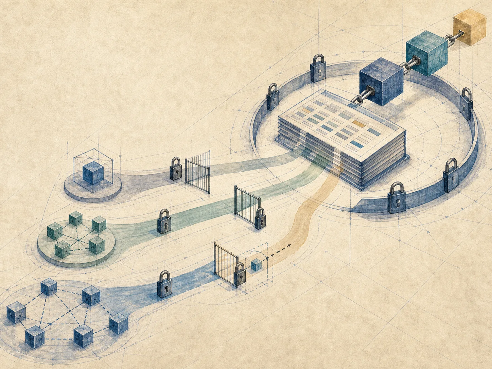
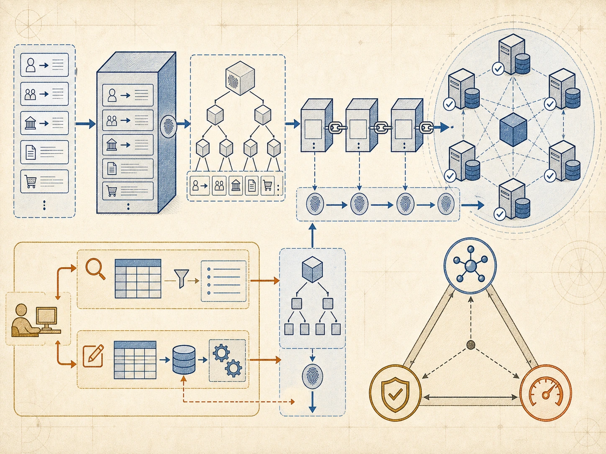
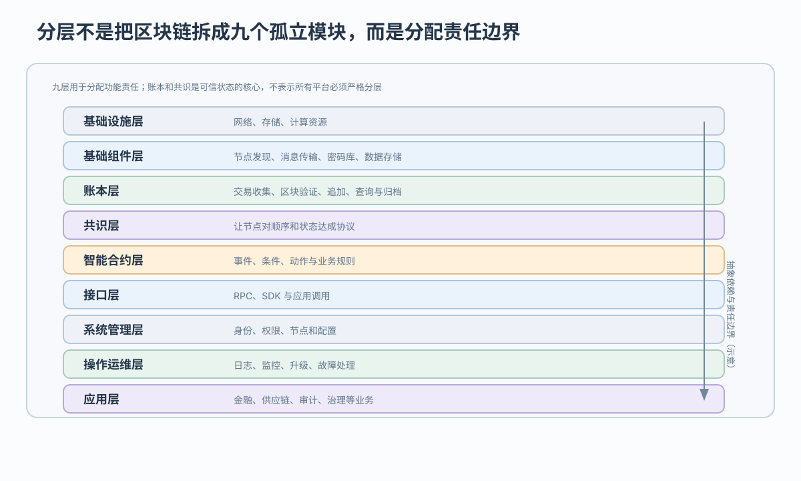

第一阶段：数字货币记账
以数字货币记账和链式历史为主；要面对吞吐、确认等待和开放网络协调

供应商、物流商和门店怎样加入、读写、记账和共同改规则
 VER. 2608
Built with impress.js
VER. 2608
Built with impress.js
多机构物流：写清谁能加入、读写、记账，哪组程序负责验证和运维
先看交易怎样验证、接受、更新状态，再定供应商、物流商、门店权限
数字货币→智能合约→行业协作：用途、参与者、维护工作都增加

以数字货币记账和链式历史为主；要面对吞吐、确认等待和开放网络协调
加入智能合约和可编程金融规则；代码错误、升级和外部输入随之成为问题
扩展到社会治理与行业协作；必须处理身份准入、跨组织改规则和旧系统接入
公有链开放参与；联盟链由多机构授权；私有链由单组织控制
| 模式 | 节点准入 | 读／写权限 | 记账与治理 | 代表性共识例子 |
|---|---|---|---|---|
| 公有链 | 开放参与 | 规则通常公开；读写由协议约束 | 参与者竞争或按协议记账 | PoW 等 |
| 联盟链 | 组织授权 | 可按成员与业务划分 | 受控记账，组织协商治理 | PBFT 类等 |
| 私有链 | 单组织控制 | 组织决定读写范围 | 内部记账与治理 | Raft／Paxos 等 |
联盟链与私有链合称许可链；共识名称只是代表性例子，具体平台的权限和协议可能不同
开放节点难约束，广播和身份管理难预测；许可节点仍要看协议、机器、负载
适合开放参与和弱中心信任；代价是广播、共识和身份治理更难预测
适合多机构协作；需要成员准入、权限治理和共同规则，性能取决于具体系统
适合组织内部协作；加入、读写和记账都由一个组织控制，因此不再解决多个互不信任主体怎样共同改规则
选择前列出谁参与、谁监管、谁能看哪些数据、每秒多少交易、谁维护节点；开放程度本身不代表先进程度
可以把九层归为五组，再问每组拿到什么、做什么、交给谁

归档把部分历史移出常用节点；跨链还要验身份、证明、确认结果
收集、打包、验证并追加被接受的历史；它回答“记录了什么”
在协议和故障假设下决定哪些顺序或状态转移被接受；最终性依协议而异
归档保留历史但部分记录不再由常用节点直接查询；跨链还要验证对方身份、证明，以及两条链何时都确认结果
账本保存历史，共识决定接受条件，查询索引服务可见数据；系统设计要同时说明历史保存、接受条件和可查询范围
事件可能来自错误传感器或接口；平台判条件，动作仍要验证和共识
货物签收等外部事件进入系统；身份认证和数据真实性依赖可信接口或预言机
双方签名、权限和业务规则满足；条件由平台按其执行语义判断
确认付款并追加账本记录；执行结果仍需按平台规则验证和达成共识
智能合约在功能上类似存储过程或触发器，把规则与数据操作绑定；多节点执行、代码错误和升级治理使它不等同于数据库对象
RPC／SDK 发交易；平台管身份和节点；自建／BaaS 决定谁保管密钥、修故障
| 层次 | 主要能力 | 对应用的意义 |
|---|---|---|
| 接口层 | RPC、SDK | 简化调用和访问 |
| 管理层 | 身份、权限、节点 | 控制主体可执行的操作和可访问的数据 |
| 运维层 | 日志、监视、管理 | 支持运行和故障处理 |
| 应用／BaaS | 业务服务与封装 | 降低接入门槛；BaaS 是服务形态，不是第十个架构层 |
把三角换成可测项：参与者数、容错、吞吐、确认时间
更多主体参与和共同治理；协调、广播和身份管理成本可能上升
副本、验证和故障容忍提高篡改检测或可用性；存储、确认和隐私成本也会增加
吞吐、延迟和资源开销要求更短路径或更少协调；可能改变开放参与和信任假设
这不是严格数学定理；只有写出节点数、故障假设、吞吐、延迟和资源消耗，取舍才可检查
分别检查广播确认、跨链验证、历史查询和代码升级
广播和共识共同形成确认延迟；高并发会争用网络、节点和排序路径
不同链的身份、状态证明和最终性不一致；验证与失败处理增加复杂度
历史越长，存储、索引和查询压力越大；归档能降在线成本，却改变可查询范围
代码错误会被多个节点重复执行；要明确谁审计、谁能升级，以及出错后怎样暂停或补偿
先列每家机构能做什么，再决定哪些程序由谁运行、签收信息错了怎样处理
列出供应商、物流商和门店谁可加入、读取、写入、提议区块、验证和修改规则，再选择公有、联盟或私有链
把资源、节点基础、账本共识、合约接口和管理运维分别交给某家机构或共同团队；九层不是九台服务器
用 Event—Condition—Action 写付款规则，同时指定签收由哪个接口提供、谁能升级代码、失败后怎样追回或补偿
写节点数、能容忍的故障数、每秒交易、最长确认时间和资源消耗，再测试跨链、归档与合约错误